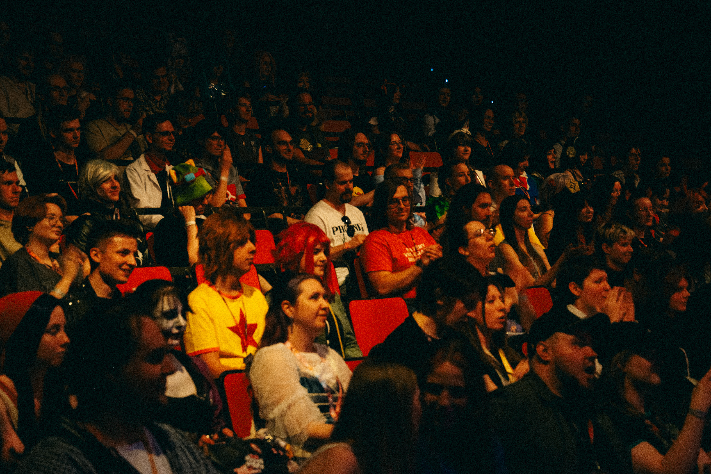
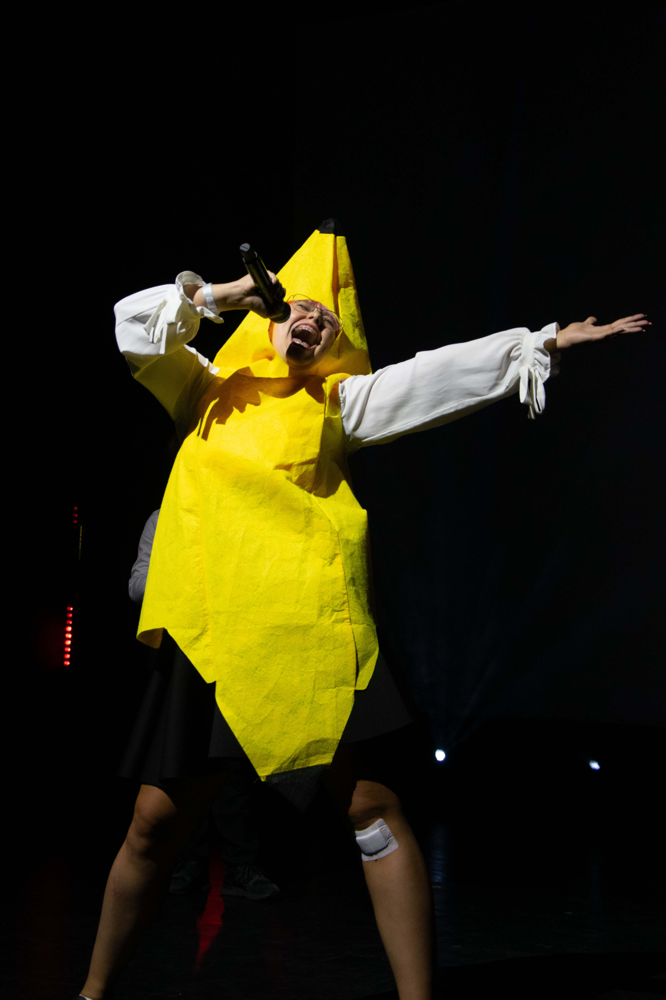

.jpg)
W ostatni weekend sierpnia korytarze poznańskiego Collegium da Vinci wypełniły się miłośnikami kultury dalekiego wschodu.
Hikari należałoby podsumować jako raj dla osób zainteresowanych szeroko pojętą popkulturą, nie tylko japońską, choć był to główny punkt festiwalu. Jesteśmy jednak przekonani, że osoba, która nie przeczytała w życiu ani jednego tomu mangi, wciąż bawiłaby się tam wyśmienicie. Program wydarzenia obejmował m.in prelekcje, panel, konkursy czy warsztaty. Poza tym można było odwiedzić strefy gier czy przejść się między stoiskami. Oczywiście nie są to wszystkie inicjatywy podjęte przez organizatorów by zintegrować uczestników wydarzenia.

Największymi atrakcjami festiwalu były koncerty oraz sesje meet & greet z zachodnimi wokalistkami odpowiedzialnymi za jedne z najbardziej rozpoznawalnych utworów dla fanów anime. Szczególną uwagę zwracała m.in R!N, którą można usłyszeć na ścieżce dźwiękowej do TO BE HERO X, Attack on Titan, Re:Creators, Seraph of the End, jak i w głównym motywie Star Guardian w grze League of Legends z 2019 roku.
Niezwykle krzepiącym jest fakt, że istnieją projekty, popularyzujące fromę rozrywki, wcześniej uznawanej za nietypową, "inną" i zrzeszające przy tym społeczność. Paweł Dybała w wywiadzie dla Uniradia został zapytany o to jak zmienił się rynek mang na przestrzeni lat. Na to pytanie odpowiedział:
“Nie jesteśmy już w szkolnej piwnicy. [...] Dotarliśmy już do tego momentu, że coraz mniej jest sytuacji, że przykładowo rodzice wyrzucili dziecku kolekcję mang, bo obejrzeli w telewizji, że rysuje je szatan.”

Co jest niezwykłe na imprezach takich jak Hikari? Otwarta społeczność, która je tworzy. Wielokrotnie spotykaliśmy się z sytuacjami, w których osoba, która była nieco nieśmiała i pojawiła się na terenie Collegium da Vinci bez towarzystwa, a zakończyła dzień otoczona ekipą nowo poznanych znajomych, z którymi dzieli zainteresowania.
Posłuchaj pełnych wywiadów na Spotify
Rozmowy z gośćmi festiwalu, a dokładniej: dr. Pawłem Dybałą, Ayo, Liską Livest, Makowe Arty i The Tunes są już dostępne na spotify.
Tekst i wywiady: Dawid Gruszka